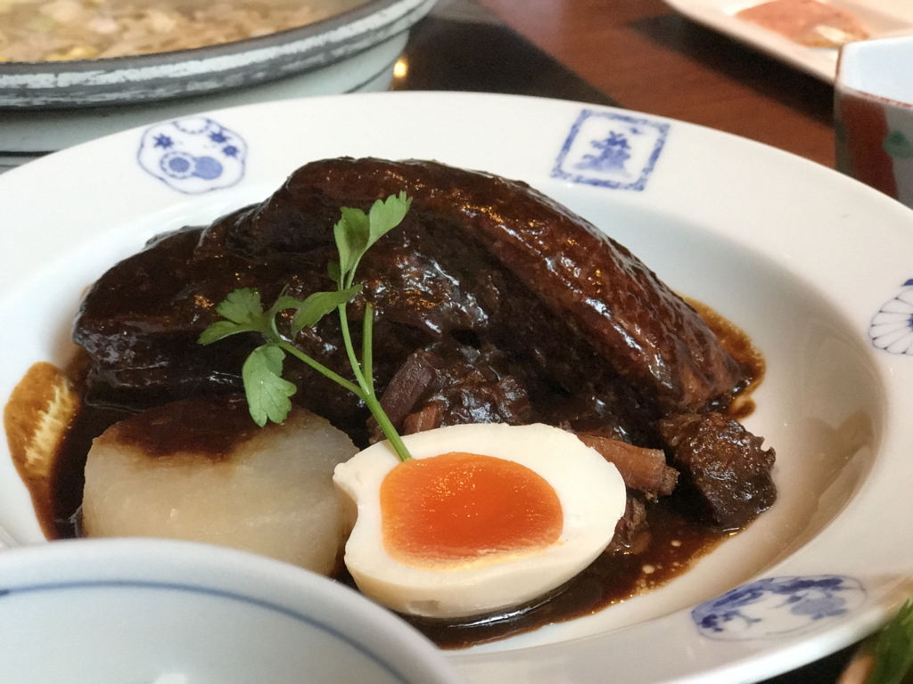
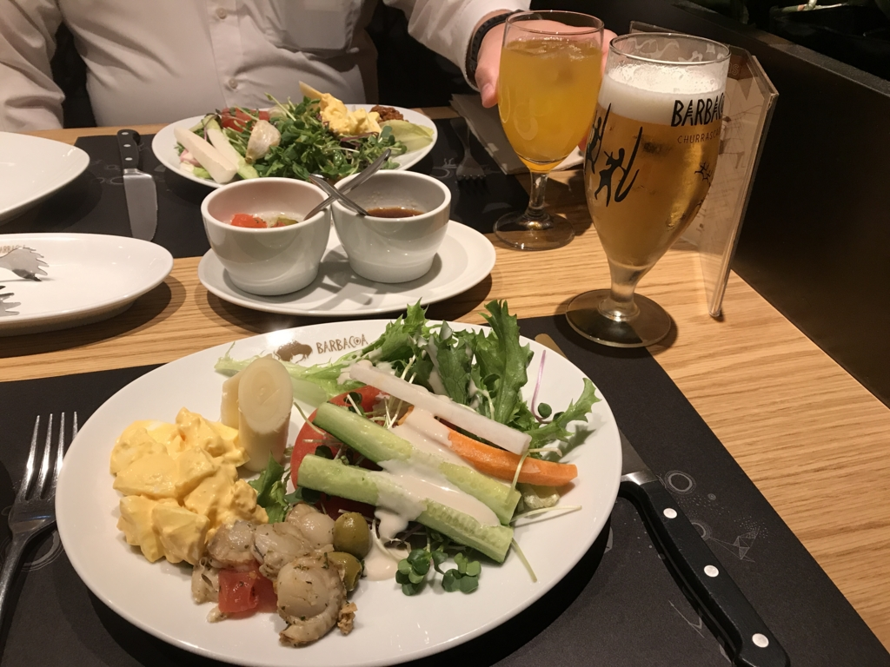
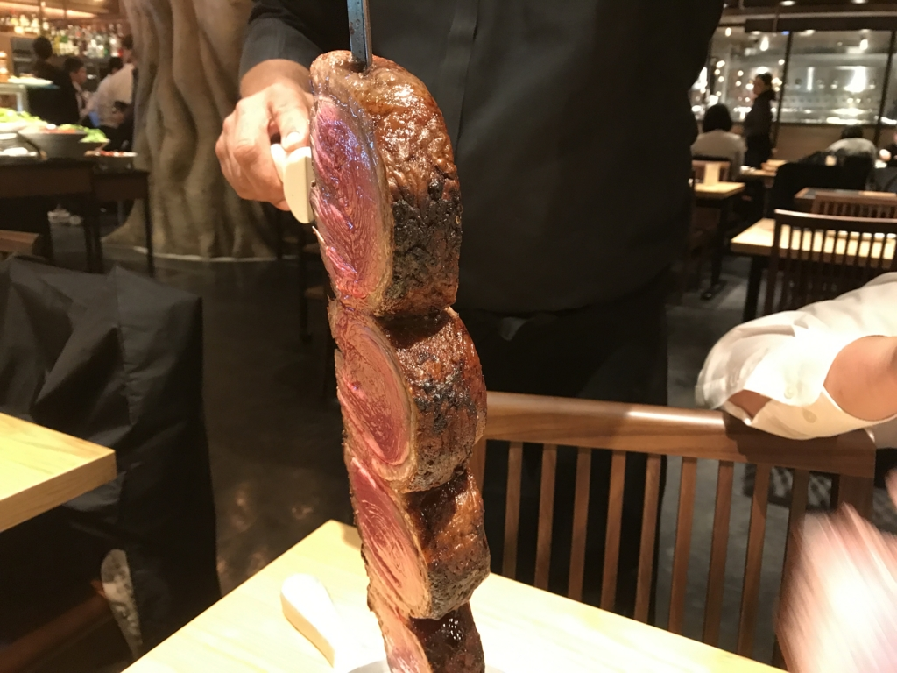

姪の入園式にお邪魔してきた（先生がかわいいとか、そういう話はないです！）
公開日：

つい最近、おかんが市川市から市川市に引っ越しをしたんだが、「インターネットがつながらないのでなんとかして」と言う。流石にそれだけの用事で松山から東京まで行くのは面倒くさいなぁ、5月に de:code でるためにまた東京へ行くし、と思っていたのだけど、ついでに「姪の幼稚園の入園式があるから、ついでに出ればいい」という話になり、それだったら海外から帰ってきた弟1号の顔も見ておこうか、済ませておいた方がよい用事もいくつかあるしと思い、株主優待券を2枚使って先週末東京へ行ったきた。
入園式というものには初めて出たが、なかなかに楽しい場所だ。
まず、女性の先生がかわいい。どこかのアイドルグループかな？ 歌を歌ったり、大きな紙芝居をしたり――さっそく懐いて離れない園児もいて、なんだか幸せな空間ができていた。おれも一緒に入園したかった。
それにしても、自分のときはどんな感じだったのだろう。
自分は住之江の加賀幼稚園というところに通っていたが、
- おしっこするときに便器で頭を打ったこと
- 丸い回転遊具のてっぺんで調子に乗っていたらそのまますとんと下に落ちて、頭が遊具に挟まって取れなくなったこと
- 送り迎えのバスで毎回助手席に陣取って『キン肉マン』のテーマをリクエストし続けていたら、ある日反乱が勃発して、他の園児に監禁・助手席を剥奪されたこと
- 習字の時間（なんか1回だけあったんだよね！）に好きなひらがな（まだ読めない）を選べと言われて、「そ」の上が繋がっていないバージョンを選んだこと
- 運動会か何かで鼓笛隊をやらされたときに、大太鼓を選んで後悔したこと（重いし疲れた
- プールのとき、バスで他の幼稚園まで行ったこと
- 先生が「漢字がかけるヒト」を募集した時に、自分の名前しか書けないくせに立候補したこと
- そのとき、困った先生からひらがなの下敷きをタダでもらったこと
- 4年保育だったので、卒園のときに3人だけ特別な賞状をもらったこと
- 卒園して次の年に木製の立派なアスレチックジムができて悔しい思いをしたこと
ぐらいしか覚えていない。
自分は、まぁ、そんな感じで、自己主張の強い面倒な子だったように思われるのだろうけど、姪はたいそう大人しく、周りが母親を求めて泣いたり、園長先生が話をしているのに立ってうろうろしたり、おしゃべりをしたりしているなか、一人じっとしているのが印象的だった。股をおっぴろげて座る癖があり（新体操をしているらしくて、柔軟のつもりかもしれない）、パンツが思いっきり見えまくってる点を除けば、かなり行儀のよい部類だったように思われる。妹の娘にしては受け答えもしっかりした子なので、これからどんな幼稚園生活を送るのか、おじさんは楽しみでならない。
それにしても、こういう姿を見るに、これからの世の中がこの子たちにとってよい世の中になってほしいと思わざるを得ない。姪ですらこれなのだから、自分の子であればもっと心配で、不安で、暗い気持ちになっているのだろう*1。
最近は利己的な人間が増えているというが、若い人が結婚をしない、子どもを作らないというのも原因の一つかもしれない。とはいえ、孫の成長を願う世代が立派かというと、孫の世代のために可処分所得が減ることにはけっして同意しないわけで（お年玉も上げられなくなるしね、それがその子の将来から毟り取ったものであるとしても）、なかなか難しいものだと思う。
自分が今の立場でできることと言えば、（年金もないｗ）老父を養って弟妹の負担にならないようにし、また、何かあったときのためのバッファーとして役に立つことだろう。自分も子どもがほしいなぁ、と思うが、どちらかというと、ないものをねだるより、今あるものを損なわないようにしたいという気持ちが強い*2。羨ましくないといえばウソにはなるが、これは割と本気だったりする。
そんなわけで、Twitter では結婚したい、結婚したいみたいなことを言っているが、どっちかっていうとしないほうに傾きつつある。たまにいろいろ気を使って画策してくれる人もいるけれど、気遣いはうれしいが、そっとしておいてくれると割とうれしい。
たぶん、自分はずっとこのままで、父が亡くなれば、次は母の面倒を見ることになるんだろう。母は江戸っ子なので、愛媛にはきたがらないだろう。そうなれば、また、ここを離れて東京に戻るのかもしれない。それはそれで仕方がないが、せめてそれまではこっちをもう少し楽しみたいものだ。もう少し大きくなったら、姪っ子・甥っ子を呼んで、夏休みに瀬戸内の島でキャンプとかしてみたいし、それまでにいろいろ研究を進めておく必要がある。それまで、「たまにあらわれて、謎のプレゼントを置いて行ったり、行事で写真を撮ってくれる謎のおじさん」という美味しいポジションをキープしながら、みんなの成長を見守りたいと思う。
それはそれと、久しぶりに家族全員（父を除く）でお昼ご飯を食べられて楽しかった。頼んだ黒豚の角煮（冒頭の写真）がちょっとデカすぎて、おっさんには少しきつかったけれど、とっても美味しかった。

美味しかったつながりでいえば、友人と平日の昼間に品川でランチもした。

シュラスコというそうなのだが、屈強な男がひっきりなしに肉を勧めては、ワイルドな串焼き肉を薄切りにして出してくれるお店で、ちょっとテンションが上がる。
あと、夕ご飯も「愛媛にはなさそうなもの」をわざわざチョイスしてくれて、結構おいしかった（タイ料理ってそういえばないよねー、探せばあるのかもだけど？）。
予定がぎっちりでちょっと疲れたけど、行ってよかったと思いました。